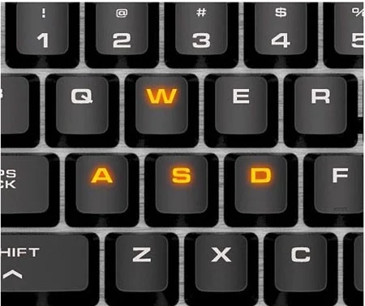
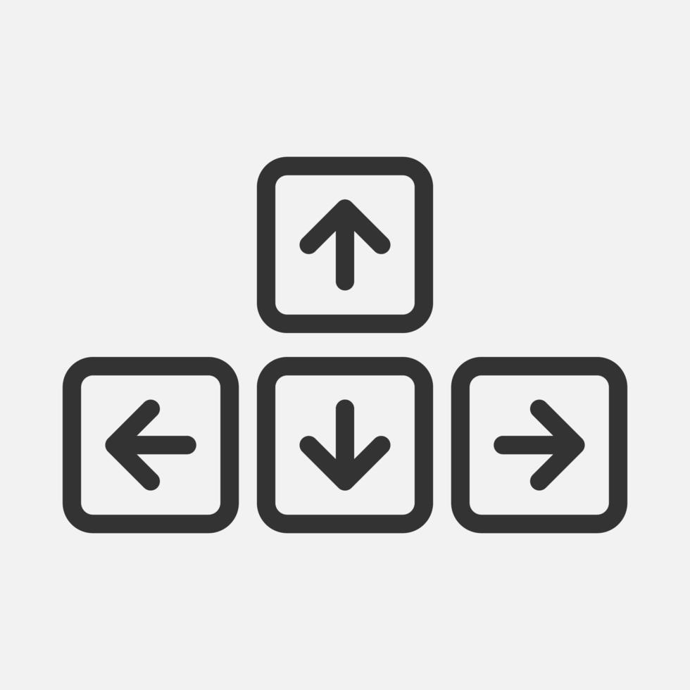

Space Exploration
Space exploration has led to major technological advances, from satellites to GPS systems. It continues to expand our understanding of the universe and our place within it.
Read moreWelcome to the landing page for my Doodle Jump inspired game. Explore how to play, learn more about the game, and check out extra content below.
The goal is simple: keep jumping as high as possible without falling. Use the arrow keys or A/D to move left and right. Land on platforms to continue climbing. Avoid enemies and falling gaps. The higher you go, the harder it gets.
Play Game


This game is inspired by the classic Doodle Jump concept. It focuses on quick reflexes, timing, and continuous movement upward. The design encourages replayability by increasing difficulty over time and introducing new platform patterns.

Space exploration has led to major technological advances, from satellites to GPS systems. It continues to expand our understanding of the universe and our place within it.
Read more